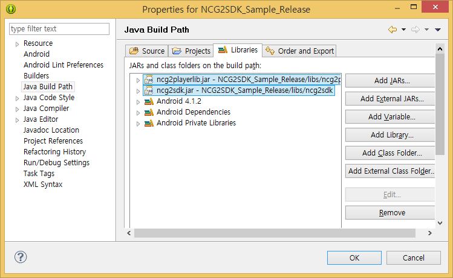
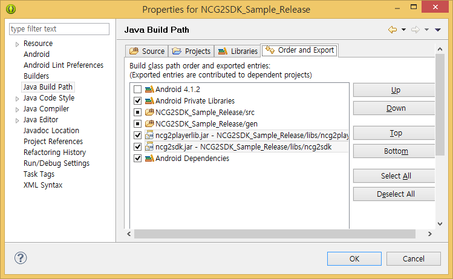

|
NCG SDK for Android Build 20230428
INKA Entworks NCG DRM Library for Android
|
|
NCG SDK for Android Build 20230428
INKA Entworks NCG DRM Library for Android
|
NOTE 본 문서는 아래와 같은 환경을 기준으로 작성되었다.
PallyCon Android SDK는 jar 파일과 so로 구성되어 있으므로 별도의 설치가 필요 없고, 해당 파일들을 SDK가 적용될 Application 프로젝트의 라이브러리폴더(libs)에 적절히 복사해 넣어주면 된다. 데모 프로젝트에서 처럼 PallyCon Android SDK를 별도의 프로젝트에 적용하기 위해 아래와 같은 단계를 통해 프로젝트를 설정할 수 있다.
so 파일들은 libs/armeabi 폴더에 복사해 넣는다.
ncg2sdk.jar파일을 libs 폴더에 복사해 넣는다. (sqlcipher.jar 파일도 libs 폴더에 넣는다)
아래 그림과 같이 "Java Build Path" 에 ncg2sdk.jar파일을 추가해줘야 한다.


NOTE 프로젝트 내 libs 폴더안에 또 다른 폴더를 생성하여 jar파일을 관리하는 경우에는 App 실행시 FATAL 에러가 발생할 가능성이 있다. 이러한 경우에는 "Order and Export" 탭에서 ncg2sdk.jar를 체크해준다.
PallyCon Android SDK를 정상적으로 사용하려면 기본적으로 요구되는 권한은 다음과 같다.
Item | Description -|- READLOGS | LOG를 읽을 수 있는 권한 INTERNET | 네트워크 사용 권한 WRITEEXTERNALSTORAGE | 외부 storage를 쓸 수 있는 권한 READPHONESTATE | 기기의 상태를 읽을 수 있는 권한 MOUNTUNMOUNT_FILESYSTEMS | 파일 시스템 편집 권한
Core객체는 싱글톤으로 APP이 구동되는 동안 하나의 객체만이 생성된다.
public class DemoLibrary {
...
static Ncg2Agent g_ncgAgent = Ncg2SdkFactory.getNcgAgentInstance();
public final static Ncg2Agent getNcgAgent() {
return g_ncgAgent;
}
...
}Ncg2Agent 객체를 사용하기 위해서는 init() 메소드를 통한 초기화 작업을 수행하여야 한다. 일반적으로 Ncg2Agent의 init() 메소드는 앱이 시작되는 시점( android.app.Application의 onCreate )에서 호출하여 준다. Ncg2Agent 객체가 초기화 되지 않았거나, 이미 릴리즈 된 상태에서 내부 메소드들이 호출되면 오류가 발생되므로 주의해야 한다.
Item | Description -|- NotSupportOffline | 오프라인시 지원안함 OfflineSupport | 오프라인시 지원함
오프라인 지원정책을 'OfflineSupport' 로 설정하는 경우 오프라인에서 연속으로 실행되는 횟수를 제한할 수 있는 방법을 제공한다. 기본으로 셋팅된 실행제한횟수는 10이며 이 값은 OfflineSupportPolicy enum 클래스의 setCountOfExecutionLimit 메소드를 통해 설정이 가능하다.
public class DemoApplication extends Application {
@Override
public void onCreate() {
super.onCreate();
initializeNcgAgent();
}
void initializeNcgAgent() {
try {
DemoLibrary.getNcgAgent().setHttpRequestCallback(mHttpRequestCallback);
Ncg2Agent.OfflineSupportPolicy policy = Ncg2Agent.OfflineSupportPolicy.OfflineSupport;
policy.setCountOfExecutionLimit(20);
DemoLibrary.getNcgAgent().init(this, policy);
DemoLibrary.getNcgAgent().enableLog();
} catch (Ncg2Exception e) {
e.printStackTrace();
String errorMsg = "Exception in init() : " + e.getMessage();
Log.e(DemoLibrary.TAG, errorMsg);
Toast.makeText(this, errorMsg, Toast.LENGTH_LONG).show();
}
}
...
}PallyCon Android SDK 내부에서 HTTP 통신 제어를 위해서는 앱에서 HttpRequestCallback을 구현하여 초기화 이후 Callback을 설정하면 된다. HttpRequestCallback 콜백 객체를 설정해주기 위해서 Ncg2Agent.setHttpRequestCallback 메소드가 사용된다.
public class DemoApplication extends Application{
private Ncg2Agent.HttpRequestCallback mHttpRequestCallback = new Ncg2Agent.HttpRequestCallback() {
@Override
public String sendRequest(String url, String param){
...
}
@Override
public byte[] sendRequestResponseBytes(String url, String param) throws NcgHttpRequestException {
...
}
@Override
public byte[] sendRequest(String url, String param, int begin, int end) throws NcgHttpRequestException {
...
}
}
private void initializeNcgAgent() {
...
DemoLibrary.getNcgAgent().setHttpRequestCallback(mHttpRequestCallback);
...
}
}PallyCon Android SDK 내부에서 Local File 제어를 위해서는 앱에서 LocalFileCallback을 구현하여 초기화 이후 Callback을 설정하면 된다. LocalFileCallback 콜백 객체를 설정해주기 위해서 Ncg2Agent.setLocalFileCallback 메소드가 사용된다.
public class DemoApplication extends Application{
private Ncg2Agent.LocalFileCallback mLocalFileCallback = new Ncg2Agent.LocalFileCallback() {
@Override
public Boolean fileOpen(String filePath, String openMode, int cloneNum) throws NcgLocalFileException {
...
}
@Override
public void fileClose(int cloneNum) throws NcgLocalFileException {
...
}
@Override
public byte[] fileRead(long numBytes, int cloneNum) throws NcgLocalFileException {
...
}
@Override
public long fileWrite(byte[] data, long numBytes, int cloneNum) throws NcgLocalFileException {
...
}
@Override
public long getFileSize(int cloneNum) throws NcgLocalFileException {
...
}
@Override
public long setFilePointer(long distanceToMove, int moveMethod, int cloneNum) throws NcgLocalFileException {
...
}
}
private void initializeNcgAgent() {
...
DemoLibrary.getNcgAgent().setLocalFileCallback(mLocalFileCallback);
...
}
}DRM이 적용된 콘텐츠를 사용하기 위해서는 반드시 라이선스를 발급 받아야 한다. 라이선스 파일은 유효 기간, 재생 횟수, TV-out 허용 여부 등 콘텐츠의 권한이 포함되어 있다. 따라서 콘텐츠를 재생시키기 위해서는 라이선스 서버로부터 발급 받아야하며, 라이선스가 없거나 유효하지 않으면 DRM 콘텐츠 사용이 제한된다. 라이선스 확인을 위해 PallyCon Android SDK에서 제공하는 함수는 다음과 같다.
interface Ncg2Agent{
// 입력된 경로 및 URL에 위치한 파일이 NCG 파일 인지를 확인한다.
public boolean isNcgContent(String strFileOrURL) throws Ncg2Exception
// 입력된 경로 및 URL에 위치한 파일의 라이선스가 유효한지 확인한다.
public boolean isLicenseValid(String strFileOrURL) throw Ncg2Exception
// 콘텐츠의 라이선스 유효성을 확인한다.
public LicenseValidation checkLicenseValid(String path) throws Ncg2Exception
}checkLicenseValid 메소드에서 반환되는 LicenseValidation enum타입의 다음과 같다.
Item | Description -|- ValidLicense | 유효한 라이선스 NotExistLicense | 라이선스가 없거나 유효하지 않음 ExternalDeviceDisallowed | 외부출력 장치가 금지된 라이선스 RootedDeviceDisallowed | 루팅된 단말에서 금지된 라이선스 ExpiredLicense | 기간이 만료된 라이선스 ExceededPlayCount | 횟수가 만료된 라이선스 DeviceTimeModified | 디바이스 시간이 변경된 것을 감지한 경우 OfflineNotSupported | 오프라인환경을 지원하지 않는 정책으로 초기화를 시도하는 과정에서 서버와 접속이 실패되어 오프라인으로 감지된 경우 OfflineStatusTooLong | 오프라인으로 실행된 경우가 너무 많아서 온라인이 필요한 상태. 자세한 내용은 아래 노트에서 확인 NotAuthorizedAppID | 실행되고 있는 App이 서버에서 인증되지 않은 App이므로 초기화가 실패된 경우 ScreenRecorderDetected | 스크린 레코더 앱이 감지가 된 경우
Sample Project에서는 아래와 같은 순서로 라이선스의 유효성을 확인한다.
if( DemoLibrary.getNcgAgent().isNcgContent(path) == false ) {
return true;
}
Ncg2Agent.LicenseValidation validation = DemoLibrary.getNcgAgent().checkLicenseValid(path);
if( validation == LicenseValidation.ValidLicense ) {
// 라이선스 유효 처리 루틴
...
} else if( validation == LicenseValidation.NotExistLicense ) {
// 라이선스가 없거나 유효하지 않음
...
// 라이선스 서버에 라이선스 요청
DemoLibrary.getNcgAgent().acquireLicenseByPath( path, DemoLibrary.getUserID(), DemoLibrary.getOrderID() );
if( DemoLibrary.getNcgAgent().checkLicenseValid(path) == LicenseValidation.ValidLicense ) {
// 서버에서 유효한 라이선스를 받음
} else {
// 서버에서 라이선스를 받지 못함
}
} else if( validation == LicenseValidation.ExternalDeviceDisallowed) {
// HDMI 장치같은 External Device가 연결되어서 재생을 허용하지 않을 경우
...
} else if( validation == LicenseValidation.RootedDeviceDisallowed) {
// Rooting 단말에서 허용되지 않는 라이선스인 경우.
...
} else if(validation == LicenseValidation.ExpiredLicense){
// 라이선스가 기간이 만료된 경우
...
} else if(validation == LicenseValidation.ExceededPlayCount){
// 횟수제 라이선스의 경우 횟수가 만료된 경우
...
} else if(validation == LicenseValidation.ScreenRecorderDetected ){
// 스크린레코더 앱이 감지된 경우 앱 이름과 패키지 이름을
// 아래 코드처럼 확인할 수 있다
HashMap<String,String> data = validation.getExtraData();
String appName = data.get("AppName");
String packageName = data.get("AppPackageName");
...
}NOTE 사용자가 고의적으로 디바이스 시간을 바꾸는 경우를 검출하기 위해, 무제한 라이선스를 제외한 나머지 종류의 라이선스 타입에서는 내부적으로 오프라인상태로 실행된 경우가 setCountOfExecutionLimit 메소드에 의해 명시적으로 지정된 값 이상이 되면 OfflineStatusTooLong 값이 반환된다. OfflineStatusTooLong 값은 init() 메소드호출시 오프라인지원(OfflineSupport 파라미터)옵션으로 설정된 경우에만 동작된다.
라이선스가 없거나 기간이 만료되었을 경우에 해당 콘텐츠에 대한 라이선스를 발급받아야 한다. 라이선스를 발급받는 시점은 실제 사용 전 아무 때나 가능하지만 SDK Sample App Project에서는 재생 시점에 라이선스 발급을 시도한다. 라이선스 발급 시점은 개발하는 App 시나리오에 따라 달라지겠지만, 일반적으로 발급 시점은 재생 시점에 라이선스를 요청한다. 라이선스 발급을 위해 PallyCon Android SDK에서 지원하는 함수는 다음과 같다.
interface Ncg2Agent {
// 입력된 경로와 UserID, OrderID로 라이선스를 획득한다.
public void acquireLicenseByPath(String path, String userId, String orderId) throws Ncg2Exception
// 입력된 경로와 UserID, OrderID로 라이선스를 획득하며, temporary를 설정하여 일회용 라이선스 획득이 가능하다.
public abstract void acquireLicenseByPath( String path, String userID, String orderID, boolean temporary ) throws Ncg2Exception;
// Content ID를 이용하여 라이선스를 획득한다.
public void acquireLicenseByCID(String cid, String userID, String orderID, String acquisitionURL) throw Ncg2Exception
// Content ID를 이용하여 라이선스를 획득한다.
public void acquireLicenseByCID(String cid, String userID, String siteID, String orderID, String acquisitionURL) throw Ncg2Exception
// Content ID를 이용하여 라이선스를 획득하며, temporary를 설정하여 일회용 라이선스 획득이 가능하다.
public abstract void acquireLicenseByCID(String cid, String userID, String siteID, String orderID, String acquisitionURL, boolean temporary ) throws Ncg2Exception;
}기간제 라이선스와 달리 횟수제 라이선스는 라이선스 정보에서 확인을 해야한다. 만약 횟수제 라이선스인 경우에는 횟수를 차감하는 함수를 PallyCon Android SDK에서 제공하고 있으며, 횟수를 차감하는 시점은 라이선스 발급과 가상 URL 반환이 완료된 시점에서 해줘야 한다.
private OnPreparedListener mPreparedListener = new OnPreparedListener() {
@Override
public void onPrepared(MediaPlayer mp) {
...
if( mIsCountLimitedContent ) {
DemoLibrary.getNcgAgent().decreasePlayCount(mNcgFilePath);
}
...
}
}NOTE 원격지 콘텐츠(PD/HLS)의 경우 네트워크 환경이 불안정한 경우 라이선스 발급 및 콘텐츠 재생이 원활하지 않을 수 있다. 콘텐츠를 재생할때마다 라이선스 발급을 하고 싶다면, 일회용 라이선스로 획득하는 것이 바람직하다. Downloaded Contents의 경우 라이선스 발급이 되었다면 네트워크이 안되는 환경에서 재생이 가능하다. 따라서 콘텐츠가 다운로드가 완료되는 시점(네트워크가 연결되어 있는)에 라이선스 발급하는 것이 바람직하다.
APP 시나리오에 따라 이미 발급된 라이선스를 폐기해야 할 필요가 있을 수 있다. 이런 경우에 사용할 수 있는 라이선스 삭제 관련 함수는 다음과 같으며, 시나리오에 맞게 사용하면 된다. 일회용 라이선스를 폐기하는 시점은 실제 사용 후 아무때나 가능하지만 SDK Sample App Project에서는 재생종료 시점에 라이선스 폐기를 시도한다.
interface Ncg2Agent{
// 발급받은 라이선스의 모든 CID를 통해 라이선스를 삭제한다.
public void removeLicenseAllCID() throws Ncg2Exception
// 발급받은 모든 일회용 라이선스를 삭제한다.
public abstract void removeAllTemporaryLicense() throws Ncg2Exception
// CID를 통해 라이선스를 삭제한다.
public void removeLicenseByCID(strContentsID) throw Ncg2Exception
// 파일 경로에 있는 콘텐츠의 라이선스를 삭제한다.
public void removeLicenseByPath(strFilename) throws Ncg2Exception
}PallyCon Android SDK를 이용하여 라이선스까지 정상적으로 발급을 받았다면, Ncg2LocalWebServer 인터페이스를 이용하여 내부에 있는 LocalWebserver를 컨트롤 할 수 있다. PallyCon 콘텐츠를 재생할 수 있도록 PallyCon 콘텐츠의 경로를 지정하면 가상 URL를 반환해주는 형태로 이용된다. 가상 URL을 획득한 이 후 Android에서 제공하는 MediaPlayer 혹은 3th Party Player로 접속하여 재생하면 된다. 아래는 Ncg2LocalWebServer 에서 제공하는 가상 URL 반환 함수이다.
interface Ncg2LocalWebServer{
// Local File의 경우
public String addLocalFilePathForPlayback(Activity activity, String url, long fileSize) throws Ncg2InvalidLicenseException, Ncg2Exception;
// PD 콘텐츠의 경우
public String addProgressiveDownloadUrlForPlayback(Activity activity, String url) throws Ncg2InvalidLicenseException, Ncg2Exception;
// HLS의 경우
public String addHttpLiveStreamUrlForPlayback(Activity activity, String url) throws Ncg2InvalidLicenseException, Ncg2Exception;
// HLS (live)의 경우
public String addHttpLiveStreamUrlForPlayback(Activity activity, String url, boolean isLiveHLS) throws Ncg2InvalidLicenseException, Ncg2Exception;
// HLS의 경우
// addHttpLiveStreamUrlForPlayback()와는 다르게 m3u8 경로에 해당되는 key파일을 미리 체크하지 않는다.
// 라이선스를 미리 체크하지 않으므로 HLS 키파일의 라이선스는 반드시 유효해야 한다. 그렇지 않다면 재생오류가 발생될 것이다.
public String addHttpLiveStreamUrlForPlaybackWithoutChecking(Activity activity, String url) throws Ncg2InvalidLicenseException, Ncg2Exception;
// HLS의 경우
// CID와 SiteID를 직접 넣어서 라이선스는 검증하되 m3u8 파일와 key 파일에 접근하지 않도록 처리한다.
public String addHttpLiveStreamUrlForPlayback(Activity activity, String url, String cid, String siteID) throws Ncg2InvalidLicenseException, Ncg2Exception;
// HLS (live)의 경우
// CID와 SiteID, Live 유무를 직접 넣어서 라이선스는 검증하되 m3u8 파일와 key 파일에 접근하지 않도록 처리한다.
public String addHttpLiveStreamUrlForPlayback(Activity activity, String url, String cid, String siteID, boolean isLiveHLS) throws Ncg2InvalidLicenseException, Ncg2Exception;
}아래 코드를 통해 PallyCon 콘텐츠로부터 가상 URL를 어떻게 얻을 수 있는지 확인할 수 있다.
public class PlayerActivity extends Activity {
...
@Override
protected void onCreate(Bundle savedInstanceState) {
Ncg2Agent ncgAgent = Ncg2SdkFactory.getNcgAgentInstance();
Ncg2LocalWebServer ncgLocalWebServer = ncgAgent.getLocalWebServer();
ncgLocalWebServer.setWebServerListener(mWebServerCallback);
ncgLocalWebServer.clearPlaybackUrls();
try {
if( mNcgFilePath.contains(".m3u8") ) {
// HLS Playback
mPlaybackURL = ncgLocalWebServer.addHttpLiveStreamUrlForPlayback(mNcgFilePath);
} else if(mNcgFilePath.startsWith("http://")) {
// PD Playback
mPlaybackURL = ncgLocalWebServer.addProgressiveDownloadUrlForPlayback(mNcgFilePath);
} else {
// Local Playback
mPlaybackURL = ncgLocalWebServer.addLocalFilePathForPlayback(mNcgFilePath, mNcgFileSize);
}
} catch (Ncg2Exception e) {
e.printStackTrace();
Toast.makeText(MediaPlayerActivity.this,
"[onCreate] Error Occured. : " + e.getMessage(), Toast.LENGTH_LONG).show();
return;
}
}
}NOTE Android 3.0 이상부터 Android Media Player에서 HLS를 지원한다. 그러나 기기에 따라 재생이 원활하지 않은 경우도 있다.
아래 코드를 통해 어떻게 가상 URL를 복호화하고 이용할 수 있는지 확인할 수 있다.
try {
mPlayer.setDataSource(mPlaybackURL);
mPlayer.prepareAsync();
} catch (IllegalArgumentException e) {
e.printStackTrace();
errorMsg = e.getMessage();
} catch (IllegalStateException e) {
e.printStackTrace();
errorMsg = e.getMessage();
} catch (IOException e) {
e.printStackTrace();
errorMsg = e.getMessage();
}Ncg2LocalWebServer는 내부적으로 프록시형태의 Web Server를 이용하게 되는데 이 Web Server에서 SDK 외부로 이벤트를 알리기 위해 WebServerListener 인터페이스를 이용한다. 아래 코드에서 확인할 수 있듯이 Ncg2LocalWebServer의 통지나 오류에 대하여 처리할 수 있다. 주의할 것은 onCheckPlayerStatus()메소드는 적절한 플레이어의 상태를 확인하여 반환해줘야 한다.
private Ncg2LocalWebServer.WebServerListener mWebServerCallback = new Ncg2LocalWebServer.WebServerListener(){
@Override
public void onNotification(int notificationCode) {
//통지코드는 대부분 무시되어야 된다.
}
@Override
public void onError(int errorCode, String errorMessage) {
//적절한 사용자 오류 메시지를 보여줘야 한다.
}
@Override
public PlayerState onCheckPlayerStatus(String uri) {
if (mIsPrepared) {
//플레이어가 재생이 가능할때만 PlayerState.ReadyToPlay를 반환해야 한다.
return PlayerState.ReadyToPlay;
} else {
// PlayerState.Fail이 반환된 경우에는 재생이 차단되어 진다.
return PlayerState.Fail;
}
}
};NOTE 해커가 가상 URL로 접속하여 데이터를 다운로드 받는 경우를 막기 위해 Player의 상태를 체크한다. 가상 URL로 접속은 했지만 실제로 재생 중이 아닐때는 복호화를 차단하기 위함이다.
PallyCon Android SDK에서는 일반 NCG 파일도 복호화 할 수 있는 기능을 제공하고 있다. Ncg2Agent에서 NcgFile 객체를 반환 받은 후 open->read 순으로 진행을 하면 된다. 아래는 NcgFile에 대해 제공해주는 함수이다.
interface Ncg2Agent{
//NcgFile객체를 반환한다.
public NcgFile createNcgFile();
interface NcgFile{
//NCG 파일을 Open한다.
public void open(String path) throws Ncg2InvalidLicenseException, Ncg2InvalidNcgFileException, Ncg2Exception;
//라이선스를 셋팅 후 NCG파일을 Open한다.
public void open(String path, boolean prepare) throws Ncg2InvalidLicenseException, Ncg2InvalidNcgFileException, Ncg2Exception;
//open 이후 상태에서 해당 메소드를 호출하여 복호화가 가능한 상태로 만든다.
public void prepare() throws Ncg2InvalidLicenseException, Ncg2InvalidNcgFileException, Ncg2Exception;
//Open 된 파일을 닫아준다.
public void close();
//NCG 파일로부터 콘텐츠데이터를 읽어들인다.
public long read(byte[] buff, long sizeToRead) throws Ncg2Exception;
//읽어들일 파일포인터의 위치를 이동시킨다.
public void seek(long offset, SeekMethod seekMethod) throws Ncg2Exception;
//현재의 파일포인터 위치를 반환한다.
public long getCurrentFilePointer() throws Ncg2Exception;
//NCG 파일의 헤더 크기를 반환한다.
public int getHeaderSize() throws Ncg2Exception;
//NCG 파일용 InputStream을 반환한다.
public InputStream getInputStream() throws Ncg2Exception;
}
}아래는 NcgFile 객체를 이용하여 원본 콘텐츠로 만드는 샘플 코드이다.
try {
String ncgFilePath = mFilePath;
ncgFile = DemoLibrary.getNcgAgent().createNcgFile();
ncgFile.open(ncgFilePath);
ncgFile.seek(0, SeekMethod.End);
// the original file's size will be used for checking success of decryption.
long contentFileSize = ncgFile.getCurrentFilePointer();
ncgFile.seek(0, SeekMethod.Begin);
int pos = mFilePath.lastIndexOf("/");
// removes ".ncg" in the path of NCG file
String unpackFilePath = ncgFilePath.substring(0, pos+1) + "unpackFile.mp4";
fileOutStream = new BufferedOutputStream(new FileOutputStream(unpackFilePath));
long totalReadBytes = 0;
while( true ) {
long readBytes = ncgFile.read(buffer, 1024);
if( readBytes <= 0 ) {
break;
}
fileOutStream.write(buffer, 0, (int)readBytes);
totalReadBytes += readBytes;
}
if( totalReadBytes == contentFileSize ) {
Log.d(DemoLibrary.TAG, "Decryption succeeded");
} else {
Log.d(DemoLibrary.TAG, "Decryption failed");
Toast.makeText(mainActivity, "[unpackNcgFiles] decryption failed", Toast.LENGTH_LONG).show();
}
} catch (Ncg2Exception e) {
...
}NOTE 복호화 후 파일로 만들면 원본파일 노출 등의 위험이 있다. 그러므로 메모리상에서만 복호화하여 사용하는 것을 권고한다.
Ncg2Agent 객체의 사용이 모두 끝나면 release() 메소드를 호출하여 릴리즈를 시켜줘야 한다. release() 메소드는 앱이 종료되는 시점(즉, 명시적으로 사용자가 종료한 경우)에서 호출한다. Sample App에서는 OnBackPressed() 메소드에서 다이얼로그를 생성하여 release() 메소드를 호출한다.
case DIALOG_EXIT :
builder.setMessage( getString( R.string.confirm_end ));
builder.setPositiveButton( getString( R.string.yes ), new DialogInterface.OnClickListener() {
@Override public void onClick(DialogInterface dialog, int which) {
...
finish();
DemoLibrary.getNcgAgent().release();
}
});
builder.setNegativeButton( R.string.no, null );
dialog = builder.create();
break; NOTE Application의 onTerminate메소드에서 Ncg2Agent.release메소드를 호출하는 경우도 있으나 onTerminate 메소드는 명시적으로 호출되지 않는 경우가 많기 때문에 onTerminate에서 Ncg2Agent.release 메소드를 호출하는 것은 적절하지 않다.
PallyCon Android SDK의 오류처리 메커니즘은 예외(Exception)을 통해 구현된다.
기본 class의 Exception인 Ncg2Exception 클래스가 있으며 해당 클래스를 상속받고 있는 별도의 여러 예외 클래스들이 존재한다. Ncg2Exception 클래스는 PallyCon SDK의 기본 예외클래스로서 내부적으로 ErrorCode 및 Error Message를 멤버로 갖고 있다. 에러코드가 설정된 경우 getErrorCode() 메소드를 통해 에러코드를 확인할 수 있으며 에러코드가 설정되지 않은 경우에는 -1이 반환된다. Error Message는 getMessage()메소드를 통해 확인할 수 있다. 아래는 Ncg2Player의 setDataSource() 메소드를 이용하는 경우에 대한 호출시 Ncg2Exception예외를 catch하는 예제코드이다.
try {
mPlayer.setDataSource(mNcgFilePath, mNcgFileSize);
mPlayer.prepareAsync();
} catch (Ncg2Exception e) {
e.printStackTrace();
errorMsg = e.getMessage();
} catch (IllegalArgumentException e) {
e.printStackTrace();
errorMsg = e.getMessage();
} catch (IllegalStateException e) {
e.printStackTrace();
errorMsg = e.getMessage();
} catch (IOException e) {
e.printStackTrace();
errorMsg = e.getMessage();
}앱 개발시에 에뮬레이터 환경에서만 개발이 가능한 사용자를 위한 API 로 실제 앱 배포시엔 제거 또는 'disableVirtualMachine()'를 호출해야 한다.
//허용
Ncg2Agent ncgAgent = Ncg2SdkFactory.getNcgAgentInstance();
ncgAgent.enableVirtualMachine();
//비허용
ncgAgent.disableVirtualMachine();